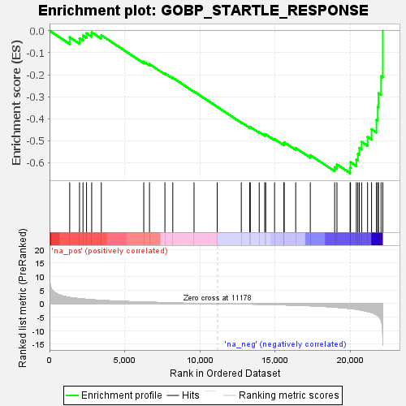
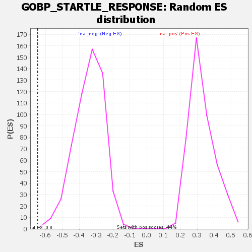

| | | Dataset | deseq_dnfgfr_res_for_gsea |
| Phenotype | NoPhenotypeAvailable |
| Upregulated in class | na_neg |
| GeneSet | GOBP_STARTLE_RESPONSE |
| Enrichment Score (ES) | -0.6470742 |
| Normalized Enrichment Score (NES) | -1.8869822 |
| Nominal p-value | 0.0017921147 |
| FDR q-value | 0.050650112 |
| FWER p-Value | 0.414 |
Table: GSEA Results Summary

Fig 1: Enrichment plot: GOBP_STARTLE_RESPONSE
Profile of the Running ES Score & Positions of GeneSet Members on the Rank Ordered List
| SYMBOL | RANK IN GENE LIST | RANK METRIC SCORE | RUNNING ES | CORE ENRICHMENT | | 1 | Get1 | 1342 | 2.239 | -0.0297 | No |
| 2 | Glrb | 1995 | 1.782 | -0.0346 | No |
| 3 | Aph1c | 2226 | 1.661 | -0.0221 | No |
| 4 | Pten | 2461 | 1.530 | -0.0115 | No |
| 5 | Aph1b | 2803 | 1.394 | -0.0077 | No |
| 6 | Nrxn1 | 3443 | 1.158 | -0.0206 | No |
| 7 | Fabp7 | 6266 | 0.515 | -0.1410 | No |
| 8 | Prkn | 6647 | 0.458 | -0.1518 | No |
| 9 | Npas3 | 7673 | 0.316 | -0.1938 | No |
| 10 | Chd8 | 8197 | 0.254 | -0.2139 | No |
| 11 | Ucn | 9609 | 0.102 | -0.2763 | No |
| 12 | Ctnna2 | 11151 | 0.004 | -0.3459 | No |
| 13 | Npas1 | 12752 | -0.139 | -0.4163 | No |
| 14 | Mecp2 | 13312 | -0.206 | -0.4387 | No |
| 15 | Glra1 | 13350 | -0.210 | -0.4375 | No |
| 16 | Grin2a | 13944 | -0.267 | -0.4606 | No |
| 17 | Grin3a | 14311 | -0.315 | -0.4728 | No |
| 18 | Slitrk6 | 14376 | -0.327 | -0.4711 | No |
| 19 | Grid2 | 14965 | -0.405 | -0.4921 | No |
| 20 | Csmd1 | 15589 | -0.503 | -0.5133 | No |
| 21 | Bace1 | 15601 | -0.505 | -0.5069 | No |
| 22 | Kcnh1 | 16371 | -0.629 | -0.5329 | No |
| 23 | Drd1 | 17341 | -0.828 | -0.5653 | No |
| 24 | Grin2b | 18961 | -1.332 | -0.6201 | No |
| 25 | Pcdh15 | 19112 | -1.395 | -0.6076 | No |
| 26 | Dvl1 | 19987 | -1.831 | -0.6218 | Yes |
| 27 | Kcna1 | 20013 | -1.851 | -0.5974 | Yes |
| 28 | Penk | 20403 | -2.114 | -0.5858 | Yes |
| 29 | Nlgn3 | 20503 | -2.211 | -0.5597 | Yes |
| 30 | Slc6a3 | 20598 | -2.302 | -0.5322 | Yes |
| 31 | Dbn1 | 20755 | -2.474 | -0.5051 | Yes |
| 32 | Grin2c | 21149 | -2.949 | -0.4821 | Yes |
| 33 | Drd2 | 21414 | -3.365 | -0.4476 | Yes |
| 34 | Grin1 | 21738 | -4.158 | -0.4048 | Yes |
| 35 | Grin2d | 21828 | -4.505 | -0.3466 | Yes |
| 36 | Adora2a | 21874 | -4.675 | -0.2841 | Yes |
| 37 | Drd3 | 22045 | -6.120 | -0.2073 | Yes |
| 38 | Otof | 22164 | -15.398 | 0.0000 | Yes |
Table: GSEA details [plain text format]

Fig 2: GOBP_STARTLE_RESPONSE: Random ES distribution
Gene set null distribution of ES for GOBP_STARTLE_RESPONSE